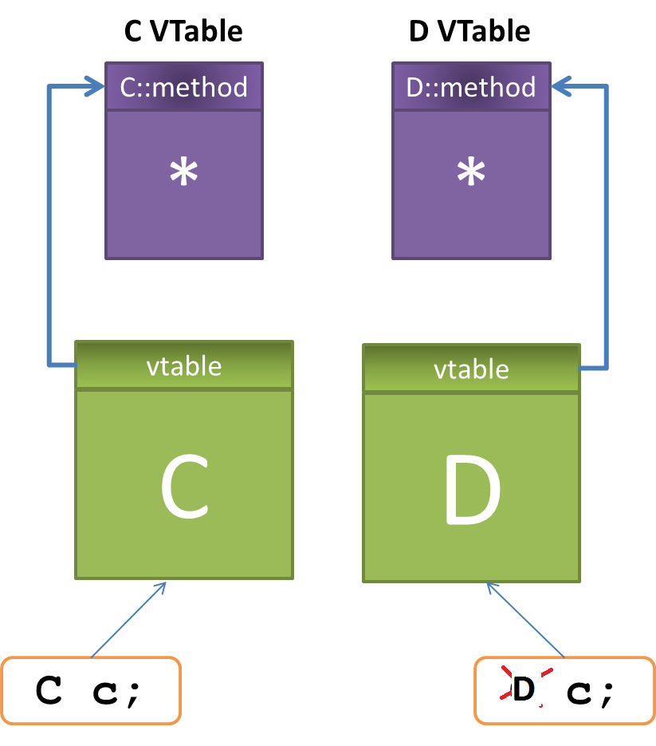

- VTable
- Projeto DayToDay
- Base64
- Esposa de Mentirinha (Dennis Dugan, 2011)
- Gnomeu e Julieta (Kelly Asbury, 2011)
- Reorganizando meus feeds (de novo)
- Mistério da Rua 7
- Bruna Surfistinha (Marcus Baldini, 2011)
- Loucuras multithreading
- Os Fantasmas de Scrooge (Robert Zemeckis, 2009)
- Sexo Sem Compromisso (Ivan Reitman, 2011)
- Houaiss no Kindle
- Passe Livre
- Bazaar com Subversion
- Loucos por Nada
- Arca Russa
- Atividade Paranormal Tóquio (Toshikazu Nagae, 2010)
- O Julgamento do Diabo
- Sucker Punch: Mundo Surreal
# VTable
Caloni, 2011-03-01 <computer> [up] [copy]Acho que na breve história desse blogue nunca contei a história do vtable. No máximo fizemos um hookzinho nos métodos de um componente COM. Mas só.
Não encontro uma analogia simples, assim, de cabeça. Então vou contar no cru, mesmo. Talvez seja até mais divertido.
A vtable foi um mecanismo criado para implementar o polimorfismo em C++ quando falamos de ponteiros para classes base cujos métodos virtuais foram sobrescritos por uma classe derivada.
A coisa fica mais simples quando explicamos que em C++ você só paga pelo que usa. Se você declarar uma classe que não tenha nenhum método virtual, os objetos dessa classe não precisarão de uma vtable. No entanto, você não conseguirá sobrescrever um método dessa classe através de uma derivada:
#include <iostream>
class C
{
public:
void method()
{
std::cout << "C::method\n";
}
};
class D : public C
{
public:
void method()
{
std::cout << "D::method\n";
}
};
void func(C* c)
{
c->method();
}
int main()
{
D d;
func(&d); // passa endereço de C "dentro de D"
}
Saída
=====
C::method
No exemplo acima, a chamada feita em func irá chamar o método da classe C, mesmo que a classe D tenha sobrescrito esse método. O programador semi-experiente deve pensar "lógico, ela não é virtual!", e está certo, assim como qualquer pessoa que decora essas formulazinhas de vestibular.
Para criarmos polimorfismo de verdade, precisamos declarar o método em C como virtual:
class C
{
public:
virtual void method();
};
Agora sim, a chamada em func irá ser para D::method.
Pergunte para o programador semi-experiente em C++ por que as coisas são assim e provavelmente ele irá falar algo sobre vtable, mesmo que não saiba exatamente como ela funciona.
A vtable é uma tabela que guarda o endereço dos métodos virtuais de uma classe. Se uma classe derivada sobrescrever um ou mais métodos de sua classe base, ela terá uma outra vtable com os endereços dos métodos "corrigidos".
Dessa forma, algo um pouco diferente ocorre na chamada c->method() quando estamos lidando com classes polimórficas: o início de um objeto dessa classe terá um ponteiro para a vtable de sua classe. Quando um método virtual é chamado, em vez do compilador gerar uma chamada estática para o endereço do método da classe cujo tipo estamos usando, ele irá redirecionar essa chamada para uma posição na vtable para onde esse objeto aponta. No caso de um objeto do tipo D, a entrada para method em sua vtable apontará não para C::method, mas para D::method, uma função com a mesma assinatura contida na classe base C e que, portanto, a sobrescreve.
Façamos um pequeno teste para comprovar o que falamos. Vamos escancarar a chamada feita a partir de uma instância de D e a partir de uma instância de C. Nada que um WinDbg não resolva de braços cruzados:
int main()
{
D d;
C c;
func(&d);
func(&c);
}
cl /Zi vtable3.cpp
windbg vtable3.exe

# Projeto DayToDay
Caloni, 2011-03-03 [up] [copy]O DayToDay é um projetinho que criei para fazer tracking das minhas atividades diárias. Eu o criei há mais de 6 anos, e provavelmente se tivesse pensado em como isso seria útil para as pessoas compartilharem suas ideias e limitasse o número de caracteres para 140, estaria rico hoje.
O "conceito" é bem simples: executo o programa, ele exibe um campo texto para digitar o que estou fazendo, digito enter ou clico no botão de OK e ele fecha. O que eu digitei cai em um arquivo texto com o mesmo nome do programa.
Algumas "features" avançadas que é bom saber:
* Ele gera o arquivo texto em UNICODE. Na época em que eu digitava em russo, isso era importante.
* Ele já gera suas anotações com data e hora.
* Você pode gerar um atalho para chamá-lo rapidamente e definir um diretório de trabalho diferente: o arquivo será gerado no diretório de trabalho especificado, e não onde está o executável.
* Existe uma versão em .NET que fiz na época que estudava C#. Felizmente eu perdi esse projeto.
# Base64
Caloni, 2011-03-09 <computer> [up] [copy]No meio dos meus artigos pendentes, encontrei esse, de Luiz Rocha, que fala sobre a dificuldade de entender o que seria Base64:
Salve Caloni,
Já leio o seu site a algum tempo. Realmente acho complicado, alguns eu nem entendo =D. Mais eh o seguinte, eu estou montando um projeto, mas eu não entendo nada de trabalhar com binários. Então pesquisei na internet, e achei um algoritmo que pode me ajudar, [na lógica]. É o base64 mas eu não entendi como ele converte e desconverte em binário. Será que vc pode me ajudar, obrigado!!
Não é a primeira pessoa que pede informações sobre algo específico demais para explicar (para isso existe a Wikipedia e o [Google], não?). No meio da minha escrita, percebi que já havia escrito sobre os fundamentos do conhecimento por trás da criação do Base64, conhecimento esse, acredito eu, todo programador que quer sair do lugar com os próprios pés deve ter.
* Básico do básico: binário <-- Luiz, você está procurando por esse!
Bônus:
* Passagem por valor e emails com anexo
REALMENTE para iniciantes:
* Configurando seus projetos no Visual Studio
* Como criar uma LIB no Visual Studio
Acredito que tudo que um programador precisa saber é o básico. O problema é que esse básico cresce a cada ano, mas, de qualquer forma, continua sendo necessário voltar às raízes de vez em quando, e se existe algo que ele nunca deve esquecer, é isso.
Até porque na programação, 90% não se cria, se copia.
Imaginemos o cenário para a criação do Base64:
Alguns meios de comunicação, notadamente envio de e-mails e a [navegação web], por incrível que pareça, trabalham em um protocolo totalmente em modo texto. É até fácil de entender, pois quando essas tecnologias nasceram as limitações de velocidade e estabilidade das conexões permitiam apenas o envio de texto puro de uma ponta a outra.
Isso quer dizer que, na prática, os anexos de um e-mail e as imagens de uma página trafegam, pelo protocolo definido, em modo texto.
Como isso é possível?
A solução não é tão obscura quanto possa parecer. Se um programador médio tivesse esse problema e nenhuma solução existisse ainda, ele faria o que sempre fez para resolver problemas desse tipo: codificar a mensagem na forma permitida. Isso já é feito com o próprio texto, que é apenas uma interpretação de tabelas de caracteres.
Tudo que é necessário fazer é o contrário, mas usando a mesma lógica: montar uma tabela de caracteres válidos e traduzir para um conteúdo binário, sendo que todas as combinações possíveis devem caber nessa tabela.
A forma mais básica binária de comunicação é um byte, constituído por 8 bits, que combinados darão 2^8 entradas em nossa tabela, que precisaria de 256 caracteres diferentes. Como isso ultrapassa o limite dos protocolos que estamos lidando, que em sua maioria utilizam a tabela ascii básica, que possui 128 posições, sendo que algumas posições não possuem caracteres imprimíveis, decidiu-se usar o múltiplo anterior: 64 posições, o que nos dá a chance de codificar 6 bits de cada vez (2^6).
Esse padrão de codificação se chama Base64. Se quiser mais detalhes, basta ler a RFC, que é pequena e muito simples de se ler.
Agora, como codificar essa solução? Só entendendo o básico, é claro.
Wikipedia e o [Google]: http://www.google.com/search?q=base64
envio de e-mails e a [navegação web]: http://pt.wikipedia.org/wiki/Hypertext_Transfer_Protocol
# Esposa de Mentirinha (Dennis Dugan, 2011)
Caloni, 2011-03-09 <cinema> <movies> [up] [copy]"(...) o filme se baseie provavelmente em um fim-de-semana que ele mesmo tirou com seus amigos (...)"
"As piadas do filme parecem internas e da vida real."
Essas foram duas anotações da minha crítica de [Gente Grande], trabalho anterior de Adam Sandler e de seu fiel escudeiro-diretor, Dennis Dugan.
O mais triste é que elas se mantém para o novo longa.
O que mais impressiona nesse novo filme é o número de tiradas feitas sobre o físico das pessoas (nesse, Sandler é um cirurgião plástico, então adivinhe) e a similaridade na estrutura "Fim-de-semana em família em lugar paradisíaco que irá colocar os pingos nos is dos relacionamentos".
Com a participação de Jenifer Aniston como sua secretária, é possível comparar o abismo que existe no carisma e na interpretação dessa com a empatia limitada de Sandler. A primeira cena onde marido, "mulher" e "amante" se encontram é icônica nesse sentido.
# Gnomeu e Julieta (Kelly Asbury, 2011)
Caloni, 2011-03-10 <cinema> <movies> [up] [copy]Como diz a introdução dessa nova animação, a história que será contada já foi contada várias vezes. Porém, e continua a introdução, nunca foi contada da maneira que será nesse filme. É uma pena, portanto, constatar que a única coisa que muda nessa recriação de fato são a técnica (animação) e o apelo infantil (gnomos de jardim). Porém, pior do que isso, esse "remake" chega à proeza de tornar enfadonho acompanhar uma das mais populares histórias de William Shakespeare.
Muito da ação mostrada no começo são cenas já consagradas em outros filmes, como quando Gnomeu invade sorrateiramente o jardim vizinho. Além disso, a própria narrativa não nos apresenta nada de realmente novo, então somos levados a apenas aguardar pelo inevitável encontro com Julieta. E no percurso ainda tropeçar em piadas que tentam criar um clima engraçadinho nunca eficaz e em referências totalmente desnecessárias e inconvenientes (como a de Beleza Americana).
O resultado é que, mesmo que o aspecto dos bonecos criados sejam admiravelmente bem feitos, pois conseguimos notar seus detalhes de cerâmica e até mesmo o som de cerâmica raspando quando se mexem, isso não é o bastante para prender a atenção.
E o que dizer do final, que parece sequer ter sido planejado sob o mesmo contexto, pois ignora simultaneamente a rixa existente entre os vizinhos humanos e o fim de um determinado personagem, apenas pelo desejo de que as coisas terminem bem, fazendo uma rima nada elegante com o final igualmente controverso de Quem Quer Ser Um Milionário.
A triste conclusão a que chegamos é que não basta contar uma mesma história se não houver nada de novo em sua forma, mesmo que a intenção fosse visar o público infantil. Fazendo um comparativo com o adulto "Romeu + Julieta", que muda praticamente apenas a época em que a história foi concebida, chegando a utilizar os mesmos diálogos datados do texto de Shakespeare, este se sai incrivelmente melhor do que os bonecos de cerâmica engraçadinhos, exatamente por explorar a mudança de ambiente e os desafios que isso implicou na adaptação das falas.
# Reorganizando meus feeds (de novo)
Caloni, 2011-03-10 [up] [copy]Depois da minha opinião dada ao Efetividade na matéria sobre ferramentas para gerenciar as leituras tenho que atualizar que não utilizo mais o esquema das estrelinhas, porque acabei me dando conta que nunca lia o que marcava para ler "depois".
Porém, ainda utilizo o Google Reader por uma série de motivos:
* Integrado com as ferramentas Google, que eu venero;
* Tem atalhos no teclado, que eu venero
* Consigo anotar o que quiser em qualquer página que navegar;
* Posso organizar os feeds por categorias.
Minha organização de feeds, até semana passada, usava categorias específicas (programação, cinema, economia) e tinha duas categorias no topo que organizava por frequência (diário, semanal), seguindo uma dica de um leitor do Efetividade. Porém, meu maior problema sempre fora os feeds que cospem milhares de entradas por dia, e que sempre ficava para ler no meu fim-de-semana, consumindo às vezes o dia inteiro!
Por isso, para evitar ser abarrotado de notícias, mantenho a seguinte organização de categorias:
1. Notícias: todos os feeds que cospem milhares de entradas. Organizo por "mágica" e leio apenas os que ficarem no topo. Ao final, clico no famigerado "Mark all as read" e fim de história.
2. Diário: leituras imediatas, que não requerem mais que cinco minutos, como a tirinha do Dilbert e minhas pesquisas cadastradas no Google.
3. Semanal: leitura um pouco mais demorada, para quando tiver mais que 10 minutos sobrando.
4. Amigos: todos os feeds das pessoas que eu conheço e acompanho.
5. Pessoal: meus próprios feeds, para reler o que eu escrevi e capturar "o outro lado da comunicação" (você, leitor).
6. Fóruns: mensagens do grupo de programação C++, por exemplo. Está no final da lista porque posso dedicar um pouco do fim-de-semana para ler a evolução dos tópicos, ou até colaborar quando tiver algum conhecimento a acrescentar.
Além disso, os Shared Itens estão configurados como Start page, sendo que tudo que eu anotar durante minha navegação deve ser lida quando eu abro o Reader (incluindo minhas anotações).
Basicamente é isso. Espero não ter que mudar novamente a estrutura. Se tiver, que seja pra melhor.
Idéias?
# Mistério da Rua 7
Caloni, 2011-03-14 <cinema> <movies> [up] [copy]Mensagem de cunho católico no mesmo molde de O Nevoeiro, porém, determinado a sacrificar a história pelo bem de um contra-ataque nada elegante?
Pelo menos temos alguns aspectos técnicos que, além de corretos, tornam a cinematografia distinta: note a fotografia pálida nos momentos de luz, representando, ironicamente, a falta cada vez maior da própria luz.
Mas como nem tudo são flores (ou luzes), o uso pouco imaginativo dos efeitos visuais compromete a experiência pretensiosamente aterrorizante das sombras que observam encostadas nas paredes. E se somos levados a esse ambiente pelos efeitos sonoros dos inúmeros sussurros que ecoam dessas mesmas paredes, nos falta o ritmo adequado para acompanharmos algumas das melhores cenas (como o resgate do projecionista machucado no ponto de ônibus).
Mesmo assim, outras cenas funcionam bem como suspense, como a do corredor misterioso ao lado do gerador de força do bar que serve de abrigo aos sobreviventes. Porém, essa sequência não seria possível sem trapacear no roteiro, pois subverte a regra específica que Luke havia ouvido em um vídeo momentos após o "ataque", dizendo para manter-se confiante apenas na luz que está em suas próprias mãos.
Além da história sofrer com um roteiro tão confuso quanto o mapa da cidade, a trilha sonora batida estilo "terror dos anos 70", que funciona tão bem no suspense A Caixa, protagonizado por Cameron Diaz, aqui soa exatamente como soaria se alguém usasse uma música dessas em um terror contemporâneo: batida.
Por fim, pagando o preço por não ter desenvolvido seus unidimensionais personagens, o que vemos na conclusão não chega nem perto de fechar um ciclo de mistério; no máximo, nos deixa levemente surpresos e angustiados por, talvez, quem sabe, uma terrível continuação.
# Bruna Surfistinha (Marcus Baldini, 2011)
Caloni, 2011-03-15 <cinema> <movies> [up] [copy]O momento que resume a ascenção de Bruna e ao mesmo tempo a visão do primeiro trabalho de Marcus Baldini é quando, em seu discurso na festa preparada por sua amiga, ela diz que acredita em si mesma e encoraja seus antitriões a fazerem o mesmo, pois se o fizerem, "conseguirão chegar aonde eu cheguei". E é precisamente nesse ponto que o filme deixa de ser uma visita convencional ao mundo da prostituição e vira uma discussão instigante sobre a capacidade das pessoas de fazer o seu melhor, não importando em que profissão ou atividade.
Menina tímida de classe média, vista pelos garotos como mero objeto sexual, e o filme faz um paralelo curioso, mas não determinante, com sua futura profissão, Raquel geralmente se isola dos seus colegas na escola. Com uma família que aparenta não lhe dar a devida atenção em uma fase geralmente complicada da vida, decide fugir de casa, muito embora os reais motivos de Raquel nunca sejam revelados de fato, e esse é mais um ponto positivo do filme, que afinal de contas irá contar não a história de Raquel, mas de Bruna, que foi o que ela se tornou após tomar essa decisão.
A transformação de Raquel até se tornar Bruna, aliás, merece créditos por estar sobriamente equilibrada nos ombros de Deborah Secco, que consegue criar de forma competente a ponte que existe entre a menina cabisbaixa, desengonçada e que fala baixo, na mulher dona de seu próprio caminho, independente em um mundo que facilmente lhe dá as costas.
A narração em off, uma solução convencional para trazer à tona ao espectador os sentimentos e reflexões de Bruna, torna-se um caminho extremamente eficaz para separar a Bruna do passado e a do futuro, que analisa em "flashback" os caminhos que tomou, e que, em vez de se esconder nas palavras, corajosamente demonstra orgulho por ter vivido e vencido tudo que passou.
A participação sensível de Cássio Gabus Mendes como primeiro cliente e companheiro em momentos-chave da narrativa o coloca em uma posição de destaque durante toda a história, ao mesmo tempo que dá a correta impressão de alguém que se importa com a protagonista e que sempre a mantém em contato, e é admirável notar como suas aparições são encaixadas de forma tão orgânica com o próprio desenvolvimento da personagem.
Com uma invejável escolha da trilha sonora durante toda a narrativa, é igualmente corajosa a escolha de sumir com ela durante os momentos pontuais e de maior tensão, como se o filme quisesse reproduzir fielmente o que aconteceu, em detrimento às passagens maiores de tempo, mais abertas à subjetividade.
Com uma direção firme, Baldini reforça a introspecção da personagem buscando, sempre que possível, deixá-la em foco completo, com o cenário aparecendo muitas vezes embaçado e difuso, como quando Raquel aparece pela primeira vez sozinha nas ruas, mas que em outros momentos funciona como reforçador de que o que estamos vendo são memórias de acontecimentos de um passado já distante.
A passagem maior do tempo, como quando Bruna narra a rotina e as diversas aventuras com seus clientes, é feita com o uso de cortes que transitam com uma fluidez elegante, nunca tornando a experiência desinteressante. Da mesma forma, há a consciência que uma história maior está sendo contada, e mais uma vez é acertada a decisão de não se reter mais que o necessário em momentos de sexo, passando sempre o essencial para o espectador, sem exibicionismo gratuito, como na famigerada e vergonhosa época das pornochanchadas do cinema nacional.
Aliás, não é sempre que vemos decisões corajosas como essa em uma produção notadamente comercial, e é sempre uma agradável surpresa notar como o cinema brasileiro tem se tornado aos poucos resgatador das discussões mais pertinentes de nossa sociedade atual.
# Loucuras multithreading
Caloni, 2011-03-18 [up] [copy]Estava eu depurando um sistema cliente/servidor com um tantão de threads e me veio à cabeça na volta pra casa como que um programador iniciante entenderia aquela bagunça de dar F10 em uma função e cair no meio de outra, dar outro F10 na outra e voltar pra primeira.
Loucura, não?
Nem tanto. O multithreading de um sistema operacional está aí pra isso. O que ocorre, no caso de depurações em uma única IDE, é que os breakpoints temporários que são definidos ao usar o comando de step into/over podem ser ativados em paralelo, simultaneamente.
Mas confesso que, de vez em quando, depurar múltiplas threads fica parecendo coisa de maluco.
# Os Fantasmas de Scrooge (Robert Zemeckis, 2009)
Caloni, 2011-03-21 <cinema> <movies> [up] [copy]Jim Carrey em Motion Capture é, em poucas palavras, inusitadamente fabuloso. O trabalho feito em seu personagem, protagonista do clássico conto de Charles Dickens, que se mantém homônimo no título original, é, de longe, um trabalho rebuscado tanto nas expressões quanto nos movimentos do boneco através dos cenários igualmente trabalhados à exaustão.
Portanto, é uma pena que o aspecto estético desse tipo de filme ainda peque pela estranheza que gera ao vermos figuras humanas não exatamente reais, e tão pouco virtuais. E apesar de ter havido uma evolução considerável desde o último trabalho utilizando essa técnica (O Expresso Polar), em nada se compara ao uso legítimo e otimizado em Avatar, facilitado por usar criaturas da imaginação.
Para os fãs do livro, a caracterização das cenas não perde em nada no aspecto descritivo. Porém, a noção que temos de Scrooge no original é de que ele é uma pessoa muito mais maldosa e mesquinha, o que não transparece na interpretação de Carrey justamente pelo filme ter um teor e um foco maior no público infantil e familiar.
É uma pena, porém, que as cenas do primeiro espírito sejam sufocadas pelo final romantizado e simplificado.
# Sexo Sem Compromisso (Ivan Reitman, 2011)
Caloni, 2011-03-21 <cinema> <movies> [up] [copy]Seguindo a tendência libertária de nossas relações sociais, que "evoluíram" sensivelmente nos últimos dez anos, "Sexo sem Compromisso" adota como pano de fundo a moderna relação de "amigos com benefícios", ou seja, o que o título do filme de fato sugere.
O que torna a situação divertida e inusitada é que, nesse caso, é a mulher do casal que representa o lado moderno da relação, interpretado por Natalie Portman. O lado sentimental da relação fica por conta de Ashton Kutcher, que faz o filho de uma celebridade que, clichês mode on, não deseja aproveitar a fama do pai para conseguir alcançar seus objetivos.
O que temos, então, é um apanhado de situações engraçadas que se sucedem conforme nossos personagens evoluem para algo parecido com uma curva de aprendizado, representado admiravelmente por Portman, mas nem tanto por Kutcher.
Divertido por dentro e por fora. Aprecie com moderação.
O blogue de José Ribeiro Pena Neto, aparentemente recém-criado, conseguiu utilizar minha solução de conversão do dicionário Houaiss para Babylon em algo mais incrívei ainda: converter, em alguns passos, a base de dados do Houaiss para o Amazon Kindle.
De uma maneira simples e efetiva, ele cita o passo-a-passo para a conversão da base Houaiss para o formato Babylon e, a partir disso, reconverter para o formato usado pelo gratuito e multiplataforma Stardict.
# Passe Livre
Caloni, 2011-03-22 <cinema> <movies> [up] [copy]Seguindo o exemplo de Rango, temos mais um filme com referências sutis que funcionam a maior parte do tempo. Com uma fotografia saudosista, de um granulado quase apático, e trilhas selecionadas a dedo (e não são muitas, já que apenas são inseridas em momentos pontuais), o novo trabalho dos irmãos Farrely (Quem Vai Ficar com Mary; Eu, Eu Mesmo e Irene) se posiciona acima da média das comédias românticas exatamente pela narrativa contida que evita o besteirol já cansativo na maioria das obras do gênero.
E aqui, mais uma vez seguindo essa tendência de mudança nas relações sociais (vide Amor Sem Escalas, e o mais recente Sexo Sem Compromisso), temos uma situação inusitada entre dois casais que irá desenvolver um raciocínio muito similar ao de "Sideways: Entre Umas e Outras": a oportunidade de uma aventura amorosa fora do casamento não é exatamente a idealizada pela nossa imaginação.
Como já havia dito, a decisão foi não inserir música em demasiado, o que, se tratando de uma comédia leve, ainda é uma decisão corajosa. No lugar, temos referências inteligentes e que não agridem nosso intelecto, como o uso do toque impagável da série secular Law & Order (e derivados) para estipular a passagem do tempo, como se estivéssemos presenciando um processo em andamento, ou até mesmo o uso parcial da trilha em que Mia Wallace e Vincent Vega se encontram pela primeira vez em Pulp Fiction, evocando um clima romântico (ainda que velado).
Por fim, confesso que fiquei extremamente satisfeito pela forma sóbria que os conflitos são resolvidos, e mesmo que isso implique em alguns personagens alterados psicologicamente, suas ações em nada diminuem o tom controlado e a direção compulsiva da dupla Farrely, sempre apostando em planos que otimizem o impacto das piadas, ou que economizem o número de cortes, quando não os dois (quando, por exemplo, dois policiais abordam Fred em um ato ilícito).
# Bazaar com Subversion
Caloni, 2011-03-23 [up] [copy]Para pessoas que ficaram viciadas em commits curtos e todo o histórico do fonte na própria máquina, foi uma surpresa descobrir que com o uso do plugin bzr-svn (já incluso no pacote de instalação), consigo ainda utilizar o Bazaar, mesmo que agora esteja trabalhando com um branch do Subversion.
Na verdade, melhor ainda: o bzr-svn baixa o SVN trunk com todo o histórico na máquina local, como se fosse um branch do próprio Bazaar, e permite a criação de branches desconectados para pequenos commits e o merge final para o servidor SVN.
E o melhor de tudo: não há segredo. Tudo que precisa fazer é instalar o Bazaar e fazer um get/co com o endereço do branch SVN que o plugin se vira sozinho para detectar que se trata do Subversion. (Se for um branch protegido, o usuário e senha serão pedidos durante o processo).
C:\Projetos>bzr co http://subversion.assembla.com/svn/caloni/ caloni Initialising Subversion metadata cache in C:\Users\Caloni\AppData\Local\svn-cache\sbrubles. C:\Projetos>cd caloni C:\Projetos\caloni>bzr qlog C:\Projetos\caloni>bzr get . ..\caloni.local Branched 2 revision(s). C:\Projetos\caloni>cd ..\caloni.local C:\Projetos\caloni.local>vim readme.txt C:\Projetos\caloni.local>bzr ci -m "Commit local" Committing to: C:/Projetos/caloni.local/modified readme.txt Committed revision 3. C:\Projetos\caloni.local>vim readme.txt C:\Projetos\caloni.local>bzr ci -m "Commit local" Committing to: C:/Projetos/caloni.local/modified readme.txt Committed revision 4. C:\Projetos\caloni.local>vim readme.txt C:\Projetos\caloni.local>bzr ci -m "Commit local" Committing to: C:/Projetos/caloni.local/modified readme.txt Committed revision 5. C:\Projetos\caloni.local>cd ..\caloni C:\Projetos\caloni>bzr merge ..\caloni.local M readme.txt All changes applied successfully. C:\Projetos\caloni>bzr st modified: readme.txt pending merge tips: (use -v to see all merge revisions) Wanderley Caloni 2011-03-23 Commit local C:\Projetos\caloni>bzr ci -m "Commit pro servidor" Committing to: http://subversion.assembla.com/svn/caloni modified readme.txtHTTP subversion.assembla.com username: caloni <http://subversion.assembla.com:80> Restricted Area caloni password: Committed revision 3. C:\Projetos\caloni>bzr qlog

# Loucos por Nada
Caloni, 2011-03-24 <cinema> <movies> <miniviews> <fragments> [up] [copy]Arrebata pela criatividade das cenas, ainda que conte uma história que não tem nada de surreal.
# Arca Russa
Caloni, 2011-03-28 <cinema> <movies> [up] [copy]Arca Russa é uma experiência que, como cinéfilos que somos, devemos assistir para aprender o que uma técnica como o plano-sequência consegue em termos de narrativa.
Como seres humanos, contudo, é fato que muitos poderão (e irão) achar essa experiência um verdadeiro porre.
Rodado de maneira a não apresentar cortes ao espectador, o que na prática constituem dois desafios distintos: 1) conseguir, de fato, apresentar essa sensação, mesmo que algumas cenas tenham que ter sido unidas artificialmente na edição e, 2) não tornar o filme um exercício de estilo, somente, e conseguir de fato contar uma história plausível dentro da técnica proposta.
No caso de Arca Russa, perdoem-me os críticos de verdade, apenas o primeiro elemento é digno de nota, sendo que, em minhas limitações de observador, pude apenas observar um ponto de ligação entre as ininterruptas sequências do longa, e, revendo com mais cuidado uma série de vezes, pude me deliciar com a verdadeira obra de arte que foi fazer esse tipo de ligação.
Atrevo-me, até, a tentar ver mais vezes esse delírio cinematográfico contado em forma de sonho.
# Atividade Paranormal Tóquio (Toshikazu Nagae, 2010)
Caloni, 2011-03-28 <cinema> <movies> [up] [copy]Verdade seja dita: os asiáticos sabem fazer terror como nunca.
Repassando a mesma história no primeiro fenômeno da "série", essa versão japonesa consegue ao mesmo tempo soar mais como trash e, exatamente por isso, assusta bem mais.
A história é bem simples: dois irmãos, Koichi e Hakura Yamano, passam alguns dias de repouso em uma casa, sozinhos, enquanto a irmã, Haruka, se recupera de um acidente de trânsito onde fraturou ambos os pés, dependendo assim, do irmão, para suas necessidades básicas, como descer escadas e se alimentar.
Quando fenômenos inexplicáveis (imagine só) começam a ocorrer na casa, Koichi, o irmão mais novo, começa a filmar todos os movimentos de ambos pela casa, incluindo o momento em que dormem em seus quartos, para repassar tudo durante o dia.
O mais interessante, contudo, é que apesar de não fugir muito do script original do primeiro filme da "série", essa versão consegue colocar mais medo pelos aspectos técnicos. Dessa forma, é possível ficar mais tenso quando Koichi coloca a câmera no chão para atender os apelos da irmã, e vemos apenas parte dos dois como se estivéssemos espiando por uma fresta.
Da mesma forma, as partes mais "movimentadas" do longa passam esse medo através, sobretudo, da fotografia devidamente ajustada para conseguir soar tenebrosa e ao mesmo tempo documental, com as falhas típicas de uma câmera caseira.
# O Julgamento do Diabo
Caloni, 2011-03-28 <cinema> <movies> [up] [copy]Existe uma relação entre esse primeiro (e único) longa de Baldwin e um filme de 1941 chamado "The Devil and Daniel Webster": o protagonista é o mesmo Daniel Webster. Ambos possuem dois títulos: são chamados "The Devil and Daniel Webster", porém o de 1941 também possui o título "All That Money Can Buy", enquanto esse de 2007 é chamado também de "Shortcut to Happiness".
Existe um motivo para isso: os dois se baseiam no mesmo conto de Stephen Vincent Benét escrito em 1937, que possui como característica marcante um julgamento entre o diabo e Daniel Webster, que aparentemente possui algum tipo de controle sobre este.
A explicação para isso, porém, é um mistério. E se pode muito bem ser desnecessário para os objetivos narrativos do pequeno conto, é imperdoável que em um filme de 106 minutos não consigamos sequer ter uma ideia da relação entre esses dois igualmente fascinantes personagens.
Contanto a história em um misto de drama, ficção e comédia moderada nos moldes de Woody Allen, o máximo que o filme consegue como unidade é exemplificar de maneira exemplar as nuances entre o sucesso e a felicidade de uma pessoa. Nesse aspecto, o filme toma contornos verdadeiramente intrigantes, pois o modo como Jabez, o escritor ainda não publicado, mas que vem melhorando seu estilo com o tempo, consegue, de uma hora pra outra, a vendagem e adoração fácil pelos leitores, é ao mesmo tempo inteligente e sutil: sem possuir reflexo do seu sucesso na crítica, o autor consegue, ao mesmo tempo, passar a mensagem sobre felicidade e cutucar a ferida sempre exposta dos autores de grande vendagem que possuem conteúdo de qualidade duvidável e, muitas vezes, medíocre.
# Sucker Punch: Mundo Surreal
Caloni, 2011-03-29 <cinema> <movies> [up] [copy]Cenas de ação cheias de adrenalina e perfeição técnica, uma fotografia e direção de arte extremamente competentes e uma trilha sonora que parece que foi feita para cada cena.
Quando assistimos aos mundos imaginários, a sensação dos efeitos visuais é de tirar o fôlego. Dirigido com vigor com movimentos de câmera suntuosos, ou cortes precisos para mostrar a ação de todos os ângulos, nesse momento não precisamos sequer pensar sobre a trama principal; não queremos.
Quando voltamos à realidade pós-dança, o que temos é um breve descanso dos nossos olhos, até a próxima dança-aventura.
Com um grupo de garotas obviamente sensuais, porém imaturas (como é demonstrado pela falta de jeito de Baby Doll em andar sobre saltos), a experiência de vê-las em um campo de batalha torna inequívoca a referência aos jogos de vídeogame onde temos essas mesmas personagens lutando com monstros com o triplo da altura, capturando artefatos e coletando pontos em cada fase.
[2011-02] [2011-04]